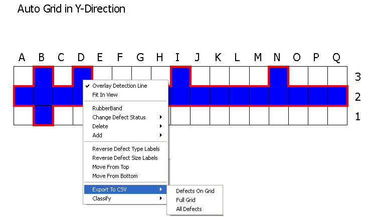

You can export
a detection line grid to a CSV file.
Procedure
- Right-click on the detection
line graph. A menu appears.
- Select Export to CSV from the menu. There
are three different sub-options available:
Figure 1. Export Grid as CSV File
Defects on Grid —
Exports only the grid locations where defects are present. In the
example shown in Figure 1, all the locations colored in blue
on the grid are exported.
Full Grid —
Exports only real and non-real defects into a CSV file. This will
not export deleted cells to a CSV file.
All Defects —
Exports all defects currently open in the Calibre DefectReview session
to a CSV file.